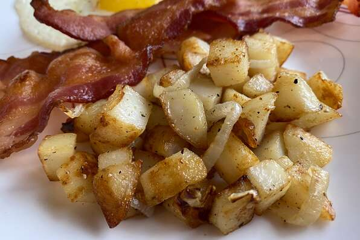

CRISPY HOME FRIES

Description
Super yummy and easy way to make crispy home fries that everyone will love! Serve as a side with your favorite breakfast!
Ingredients
- 4 medium russet potatoes, peeled
- ½ large onion
- 1 tablespoon olive oil
- 1 pinch garlic salt, or to taste
- 1 pinch seasoned salt, or to taste
Steps
- Cut potatoes into 3/4-inch cubes. Cut onion into 2 or 3 slices, then cut rings in half and separate the layers.
- Heat oil in a 10-inch nonstick skillet over medium-high heat. Add cubed potatoes to the hot skillet and season with garlic salt and seasoned salt. Spread them out evenly over the bottom and allow to cook for 5 to 8 minutes without turning. Turn, and continue cooking, turning every 5 to 8 minutes, until evenly browned.
- When potatoes have reached the desired color, add onion. Cook, stirring every couple of minutes, until onion is slightly cooked, 5 to 8 minutes longer.
- Carefully remove potatoes and onions from the oil and place on a paper towel-lined plate. Allow to cool for 2 to 5 minutes before serving.